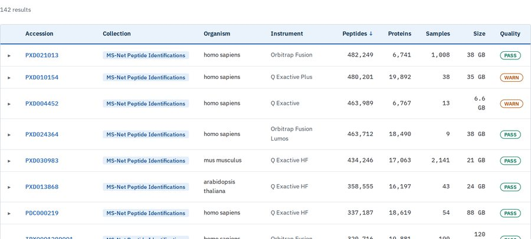
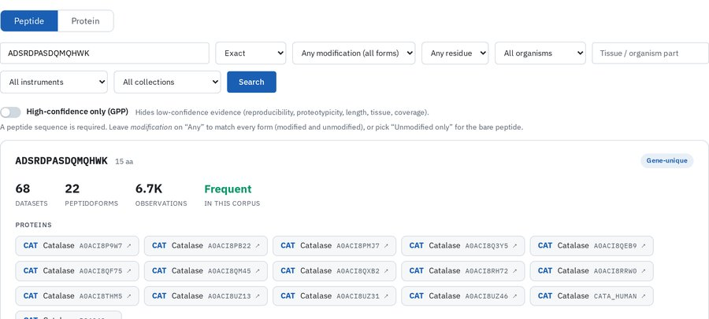
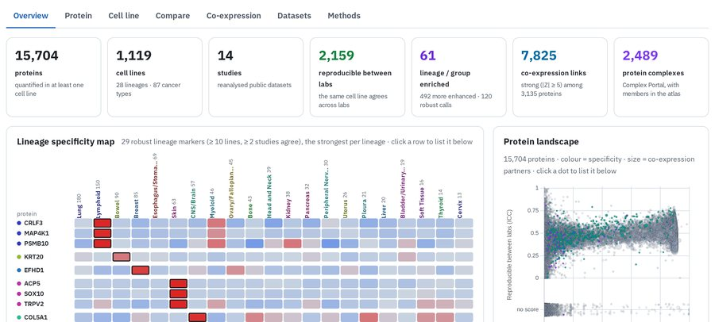
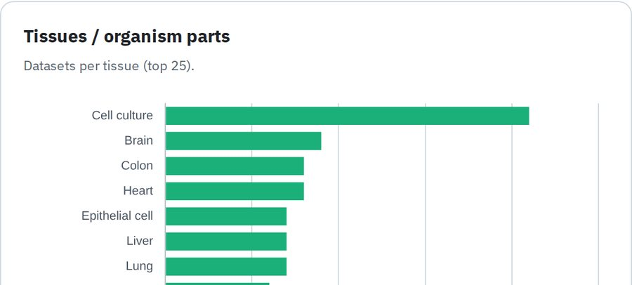

quantms 1.10.0 · Nextflow
DDA proteomics: label-free with ProteomicsLFQ, TMT and iTRAQ with IsobaricWorkflow.
Cite: Dai C, et al. Nat Methods 2024. doi:10.1038/s41592-024-02343-1
Pipelines for DDA and DIA
quantms for DDA (label-free, TMT, iTRAQ) and quantmsdiann for DIA with DIA-NN, both driven by an SDRF file on a laptop, HPC cluster or cloud.
Public ProteomeXchange datasets, reanalysed
Browse datasets by organism, instrument and collection, find the datasets that contain a peptide or protein, and download QPX tables, SDRF and MSstats input.
Peptide search and protein quantification
andes, a peptide search engine for DDA data. mokume, protein quantification from QPX features: iBAQ, MaxLFQ, DirectLFQ and TopN.
Sample metadata and results
SDRF-Proteomics describes the samples and links them to the raw files. QPX stores PSM, feature and protein-group results as Parquet tables.
Label-free (LFQ)Isobaric labelling (TMT, iTRAQ)Runs per file, in parallelRuns onceOptional, off by default
quantms 1.10 for DDA data, redrawn from the metro map in the quantms README. DIA data are processed by quantmsdiann (second tab).In-silico library from the FASTA (default)Your spectral library (--speclib)Runs per file, in parallelRuns onceOptional, off by default
quantmsdiann 2.3 for DIA data, with the default DIA-NN 1.8.1; other DIA-NN versions are selected with a profile. See the quantmsdiann README.nextflow run bigbio/quantms \
-profile docker \
--input experiment.sdrf.tsv \
--database uniprot.fasta \
--outdir results/nextflow run bigbio/quantmsdiann \
-profile docker \
--input experiment.sdrf.tsv \
--database uniprot.fasta \
--outdir results/Use -profile singularity on an HPC cluster. The SDRF file lists the raw files, samples and labels; how to write one.
Collections: MS-Net Peptide Identifications 117, Human Cancer Cell Lines 24, Immunopeptidomics 1
Number of datasets per organism, tissue and instrument, top five of each. Datasets and accessions: current portal catalogue. Other figures: peptide search index built 1 Nov 2026, which also covers retired collections. Cell lines: the cancer cell line collection. Full statistics

Dataset searchEvery reanalysed dataset with its organism, instrument, sample, peptide and protein counts; filter, then download the QPX tables, SDRF and MSstats input.
Peptide and protein searchEnter a peptide sequence, a UniProt accession or a gene name and see which datasets, tissues and instruments it was identified in.
Cancer cell line proteomeProtein abundance across 1,119 cell lines from 14 studies, by lineage, with lineage markers and co-expression.
StatisticsOrganisms, tissues, instruments, modifications and reference-proteome coverage across the whole index.DDA proteomics: label-free with ProteomicsLFQ, TMT and iTRAQ with IsobaricWorkflow.
Cite: Dai C, et al. Nat Methods 2024. doi:10.1038/s41592-024-02343-1
DIA proteomics with DIA-NN 1.8.1 by default; newer DIA-NN releases through profiles.
Cite: Yue QX, et al. Preprint, Research Square 2026. doi:10.21203/rs.3.rs-10319687/v1
Peptide database search engine for DDA: mzML, MGF, Thermo .raw or Bruker .d and a FASTA in, a Percolator-ready .pin out. Optional modes for chimeric spectra, secondary modifications and intact N-glycopeptides.
Protein quantification from QPX features: piBAQ, MaxLFQ, DirectLFQ and TopN, with normalisation, IRS, ComBat and differential expression. Replaces ibaqpy.
Cite: its predecessor ibaqpy: Zheng P, et al. J Proteomics 2025. doi:10.1016/j.jprot.2025.105440
Converts quantms, quantmsdiann, DIA-NN, FragPipe, MaxQuant and Spectronaut output into QPX: PSM, feature and protein-group tables in Parquet, with sample and run metadata. Exports AnnData for scverse.
Validates SDRF files and writes the pipeline configuration.
Cite: Dai C, et al. Nat Commun 2021. doi:10.1038/s41467-021-26111-3
MS2PIP, DeepLC and AlphaPeptDeep features for Percolator.
Cite: Dai C, et al. Preprint, bioRxiv 2026. doi:10.64898/2026.01.12.698877
QC reports for quantms, quantmsdiann, DIA-NN, MaxQuant, FragPipe and mzIdentML results: identification rates, mass error, missed cleavages, intensities and missing values.
Cite: Yue QX, et al. Mol Cell Proteomics 2026. doi:10.1016/j.mcpro.2026.101530
Installation for each tool: Tools.